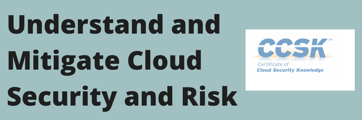

For cloud risk assessment professionals, cloud architects and other cloud professionals

Through the Certificate of Cloud Security Knowledge (CCSK)
The next online CCSK training starts October 1, 2018, with 5 daily sessions of 2 hours.
Register directly through this link.
Cloud is the new standard model for IT delivery. IT is too complicated to fully handle in one organization. That is why the world is moving towards a supply chain of interconnected companies. That brings great possibilities but also new risk and definitely requires better control.
Cloud Security Best Practices
The Cloud Security Alliance (CSA) is a vendor neutral industry association. It established the Certificate of Cloud Security Knowledge (CCSK), which demonstrates knowledge of the leading cloud security guidance documents.
I teach the CCSK as a 2 hours a day, 5 day online class. But I will also help you before, during and after the course week. And because of that, you will boost your job performance, and pass the exam quickly.
I will cover all the official courseware, the 14 domains of CCSK, plus CCM and ENISA. There are also some optional labs. These show you how to create a secure AWS architecture (and the same principles apply to other IaaS providers). What is more, I have added extra resources to speed up your learning, and your application of this to your day job.
Results
This online training will help you to:
- Perform risk assessments of cloud solutions and proposals
- Manage cloud computing risks
- Understand security controls for public cloud, private cloud and hybrid cloud
- Pass the CCSK Certificate of Cloud Security exam
- Control the IT supply chain and the cloud environment
- Learn cloud control best practices
- Take a first step towards CCSP
- Get an overview of cloud providers and secure cloud architecture
- Select real world security controls
Who is this not for?
CCSK is not a technical deep dive in any specific cloud provider. Nevertheless, it does complement vendor solution architect certifications nicely.
You must also be willing to let go of oldskool security approaches if they can be replaced by better and more modern controls.
What do others say?
Many rank the CCSK as the top cloud security certification. It was the first, and with the recent update to CCSK v4 it is also the most current.
Worried about how an online class will work for you? Here are a few quotes from participants in earlier sessions:
“The training was a rewarding educational experience and covered a range of Cloud security issues and their increasing complexity. This course would be helpful to Engineers, Compliance Managers and IT Service Managers, anyone in IT. Peter created an engaging and involving syllabus. The number of subjects involved is vast but Peter did a great job of breaking them down into manageable chunks of data, with helpful slides and intriguing tales from real-world IT Trenches.” IT Compliance Manager San Francisco, CA
And
“Learning online can have its own challenges. Peter was very patient and dealt with this very well by being inclusive with individually addressed audio comments to each student. He also encouraged real time feedback and comments via chat which I believe is vital in maintaining bidirectional interaction. The course content was excellent, available online and assisted by ongoing support by the trainer. This course is particularly relevant for Cloud Architects, for Information Security SMEs, for Implementors and Auditors of Managing Risk in Cloud operations and for those involved with Business Continuity or Contractual Negotiations concerning Cloud availability.“ John Thomas MSc, Certified ISO/IEC 27001 Auditor and IT/Security Consultant, Scotland.
About me
 My name is Peter van Eijk, and I am one of the most experienced independent cloud trainers worldwide. Since 2011 I focus on developing and delivering cloud computing training. Most of that is about the business value and business risk of cloud computing.
My name is Peter van Eijk, and I am one of the most experienced independent cloud trainers worldwide. Since 2011 I focus on developing and delivering cloud computing training. Most of that is about the business value and business risk of cloud computing.
I have delivered the CCSK cloud security training over 70 times myself in more than a dozen countries. On top of that I have developed and delivered more cloud training in more countries.
My background is broad. I worked as a researcher and instructor at a university, as a project leader and consultant at a systems integrator and an internet provider, and as an IT and digital infrastructures consultant at a Big Four company.
More reviews
These are from Google Reviews:
- Ajit Matthew: Quality of training material is high and Peter is very accessible to resolve issues and clarifications.
- Jun Hu: Peter is a great instructor and always accessible.
- K Maximov: The way you do your classes stimulates thinking about cloud technology a lot, and allowed me to quickly pass the exam.
- André Koot: Peter gives good examples of what material to study in what level of detail and prioritizing all topics in the BoK. Besides, Peter knows how to put things into perspective, making for an entertaining event. Recommended!
Here is the opportunity to become cloud security savvy
Sign up here, to make sure you are on my next CCSK online training.
Secure my place in the CCSK training
The fee for the training is EUR 1195, which should be around $ 1450 (excluding applicable VAT and payment fees). Click here for more details on the package.
If you are not ready to sign up now, go to this page, sign up for a one pager on cloud security, and stay informed of the next CCSK online class.
Guarantee
If this training does not offer you the right learning experience, you can quit after the first session and get a full refund. There will also be an option to book additional one-on-one time with the instructor, alone or with colleagues from your company.
I can actually guarantee that you pass the exam. Talk to me about the details.
Secure my place in the CCSK training
Security operations manager: “The course provides a fantastic overview of Cloud and was an eye opener to me. The benefits of cloud were made clear, but so too were the limitations and considerations of the service. I would recommend this course to everyone involved in Cloud from hands on IT to Executive. This was one of the most informative courses I have attended.”
Daniele Catteddu, Managing Director EMEA, Cloud Security Alliance: “Peter is a very experienced cloud trainer and we have enthusiastic feedback from his CCSK students.”
Leading industry vendor employee: “Exposure to the vast wealth of knowledge and experience Peter HJ van Eijk contains is well worth the price of admission. His CCSK course should be considered a solid foundation for anyone working near the cloud.“
Frequently asked questions
Will this get me CPE points?
This course may qualify for 12 or more CPE points. These might come in handy if you maintain CISSP certification for example. (ISC)² would count them as Group A points. Contact me for details.
What if this is not a good fit for me?
If you are not sure that this CCSK training is perfect for you, I invite you to schedule a free, no strings attached, 30 minute call with me. Click this link for an appointment scheduler.
If you find out it the training does not work for you, tell me on the first day of online training, and I will fully refund you.
Isn’t this too technical for me?
Typically, the answer is no. You will need to understand some cloud technology, but I have added enough introductory material to get you up to speed. Heck, I have even helped lawyers pass the exam.
What if I cannot attend a session?
You will find a lot of learning material on the private support site. That is also where recordings of the content are available for a few months after the training. If a recording fails, there are multiple recordings of earlier runs of this training.
Secure my place in the CCSK training
P.s. Any senior IT related role finds that knowledge of cloud computing value and risk is indispensable these days. As a result, this will advance your career and improve the efficiency of your team. What’s more, it is likely to positively influence the quality and cost of your company’s services. This training is a very effective way to get these results.